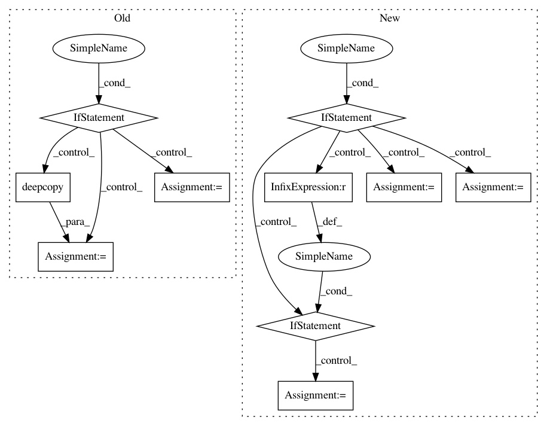

aee644931d66a4e4eca62da1ce32597e330e341c,Lib/sandbox/timeseries/timeseries.py,TimeSeries,convert,#TimeSeries#Any#Any#Any#Any#,37
Before Change
func = corelib.obsDict[self.observed]
firstIndex = corelib.first_unmasked(self.data)
if firstIndex is None:
return TimeSeries([], dtype=self.dtype, freq=toFreq, observed=self.observed)
startIndexAdj = self.firstValue()
lastIndex = corelib.last_unmasked(self.data)
tempData = copy.deepcopy(self.data[firstIndex:lastIndex+1])
tempMask = tempData.mask
tempData = tempData.filled()
After Change
if func == "auto":
func = corelib.obsDict[self.observed]
if self.size == 0:
return TimeSeries(self, freq=toFreq, start_date=tsdate.dateOf(self.start_date(), toFreq))
tempData = self.filled()
if self.mask is ma.nomask:
tempMask = numpy.empty(tempData.shape, dtype=numpy.bool_)
tempMask[:] = False
else: tempMask = self.mask
cRetVal = cseries.reindex(tempData, fromFreq, toFreq, position, int(self.start_date()), tempMask)
_values = cRetVal["values"]
_mask = cRetVal["mask"]
tempData = ma.array(_values)
tempMask = ma.make_mask(_mask)
tempData[tempMask] = ma.masked
if func is not None and tempData.ndim == 2:
tempData = corelib.apply_along_axis(func, 1, tempData)
startIndex = cseries.convert(int(self.start_date()), fromFreq, toFreq)
newStart = tsdate.dateOf(self.start_date(),toFreq, "BEFORE")
newEnd = tsdate.dateOf(self.end_date(),toFreq, "AFTER")
return adjust_endpoints(TimeSeries(tempData, freq=toFreq, observed=self.observed, start_date=startIndex), start_date=newStart, end_date=newEnd)
In pattern: SUPERPATTERN
Frequency: 3
Non-data size: 10
Instances
Project Name: scipy/scipy
Commit Name: aee644931d66a4e4eca62da1ce32597e330e341c
Time: 2006-12-20
Author: mattknox_ca@localhost
File Name: Lib/sandbox/timeseries/timeseries.py
Class Name: TimeSeries
Method Name: convert
Project Name: facebookresearch/pythia
Commit Name: 88a836a73c0b324fc116f284759dbb9c3de22e63
Time: 2020-10-14
Author: asg@fb.com
File Name: mmf/modules/encoders.py
Class Name: ImageFeatureEncoder
Method Name: __init__
Project Name: idaholab/raven
Commit Name: 2a3d7175b8da52a64da24e2ed64ca3421ded6bbe
Time: 2017-05-25
Author: paul.talbot@inl.gov
File Name: framework/Optimizers/GradientBasedOptimizer.py
Class Name: GradientBasedOptimizer
Method Name: localFinalizeActualSampling